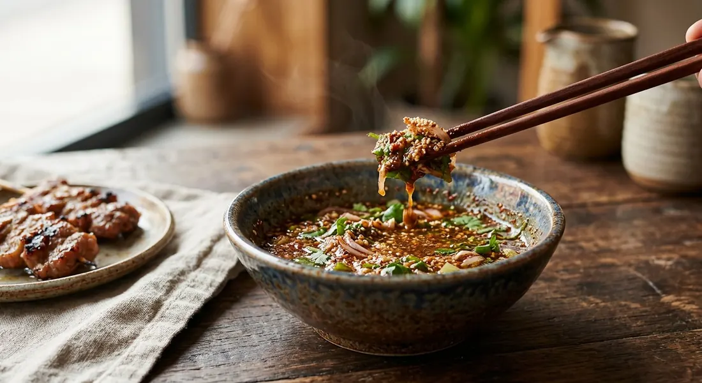

Isaan's table dip: fish sauce, tamarind, lime and chilli stirred around freshly roasted rice — the sauce that turns every grill into a party.

น้ำจิ้มแจ่ว is the sauce Thai cooks reach for the moment anything hits the coals — Kapook opens its collection with exactly that pitch: grilled, roasted, fried, even a plain omelette, all better with a bowl of jaew beside them. The shape of the sauce is always the same: sour, salty, spicy and sweet balanced against each other, with toasted rice (ข้าวคั่ว) stirred in to thicken it and carry the roasted aroma. Fourteen recipes across our five sources agree on that skeleton — and disagree on almost everything else.
The rice is the technique worth learning. TrueID's pro tips for restaurant-grade jaew: roast the rice fresh, ideally with a little galangal and kaffir lime leaf in the pan, then pound it — the aroma fades fast, so it goes in just before serving. Lime juice must be fresh — bottled lime turns bitter, TrueID warns — and the sliced greens go in last, so the shallots and coriander stay crisp and bright instead of wilting into the sauce.
Then come the schools. The classic tamarind version gets simmered until it boils and left to cool (Kapook). Pim's kitchen mixes it raw for tonight, but boils the base for her bottle batch — tamarind, palm sugar and fish sauce simmered together keep nearly a month, with the lime, chilli, herbs and rice added only when serving. Wongnai shortcuts the dissolving with one minute in the microwave. And at the deep end sits the pla-ra school — fermented fish liquid in place of some of the fish sauce — the version LINE MAN pushes for restaurant counters and TrueID calls "nua" in the extreme.
| Thai | English | Amount |
|---|---|---|
| น้ำปลาแท้ | Fish sauce | 3 tbsp |
| น้ำมะขามเปียกคั้นข้น | Tamarind water | 2 tbsp |
| น้ำมะนาวสด | Lime juice | 1 tbsp |
| พริกป่น | Chilli powder | 1 tbsp |
| ข้าวคั่ว | Toasted rice powder | 1 tbsp |
| น้ำตาลทราย | Sugar | ½ tsp |
| หอมแดงซอย ต้นหอม ผักชีฝรั่งซอย | Shallot, spring onion and coriander, sliced | to finish |
The bottle batch (Pim): ¼ cup (60 ml) tamarind water, ¼ cup (60 ml) fish sauce, 3 tbsp palm sugar, 3 tbsp lime juice, 1½ tbsp toasted rice, 2 tbsp chilli powder, 4 shallots and 2 tbsp coriander — simmer the tamarind, palm sugar and fish sauce together for the version that keeps nearly a month. The microwave trick (Wongnai): 2 tbsp tamarind water, 2 tbsp palm sugar, 3 tbsp fish sauce and 2 tsp chilli powder nuked one minute to dissolve the sugar, then 1 lime, 1 tsp toasted rice and the greens — 10 minutes prep, 5 minutes "cook".
The sour. The classic sours with tamarind (Pim, Wongnai, Kapook's tamarind jaew), the rush school with lime alone (Kapook's moo ping and omelette versions, TrueID's quick fish sauce–lime style), and most recipes use both — tamarind for body, lime for brightness.
Boiled or raw. Kapook's tamarind jaew simmers the tamarind water with palm sugar and soy until it boils, then cools. Pim mixes raw for the same day but boils the base for her bottle. Wongnai microwaves for a minute to melt the sugar. TrueID applies no heat at all.
The salt base. Fish sauce is the classic (Pim, Wongnai, TrueID), but Kapook's tamarind version builds on light soy instead, Kapook's Maggi version on Maggi seasoning, and the pla-ra school (LINE MAN, TrueID's fifth style) adds fermented fish liquid for the deep Isaan funk.
The sugar. Palm sugar (Pim, Wongnai, Kapook's main styles, LINE MAN), white sugar (TrueID's basic and rush formulas, Kapook's Maggi, quick, steak and omelette styles) or coconut sugar (Kapook's moo ping version). The amount is always small — a half teaspoon per bowl at TrueID, three tablespoons for Pim's bottle.
Toasted rice. Every full jaew in every source carries it, but the rush styles skip it — Kapook's Maggi and omelette versions have none. Where it appears, the amount swings from 1 teaspoon (Wongnai) to 2 tablespoons (Pim). TrueID's refinement: roast the rice with galangal and kaffir lime leaf before pounding.
The extras. Lemongrass only in Kapook's tamarind jaew; crushed roasted sesame only in Kapook's quick version; shallots in Pim, Kapook's grilled-pork-neck and omelette styles and TrueID's garnish; garlic only in TrueID's rush formula.
Keeping it. Kapook stores the pure sauce in the fridge up to a week and adds the rice, lemongrass and herbs only when serving. Pim boils her base and keeps it nearly a month in a bottle. Nobody stores the fully mixed sauce — the toasted rice would go soft.
This recipe is translated from the following Thai-language sources. Where they disagree, we've said so.
1. TrueID — "5 สูตรน้ำจิ้มแจ่วรสเด็ด มือใหม่ก็ทำได้ง่ายๆ จิ้มกับอะไรก็อร่อย" by WeenayA (the recipe used here, with the pro tips) — food.trueid.net
2. ครัวบ้านพิม (Pim) — "น้ำจิ้มแจ่ว (สูตรใส่ข้าวคั่ว)" (the bottle batch and storage method) — pim.in.th
3. Kapook — "7 สูตรน้ำจิ้มแจ่ว รสจัดจ้านหลากสไตล์ เลือกให้โดนท้าให้ลอง" (seven styles, tamarind to omelette) — cooking.kapook.com
4. Wongnai — "น้ำจิ้มแจ่ว สูตรมะขามเปียก" by GopOpOp (the microwave trick) — wongnai.com
5. LINE MAN Merchant — "รวมสูตรเด็ดน้ำจิ้มปลาร้าอร่อยหลากสไตล์ ไม่มีเบื่อไปกับ โค้ก" (the pla-ra jaew) — lmwnmerchantcenter.com